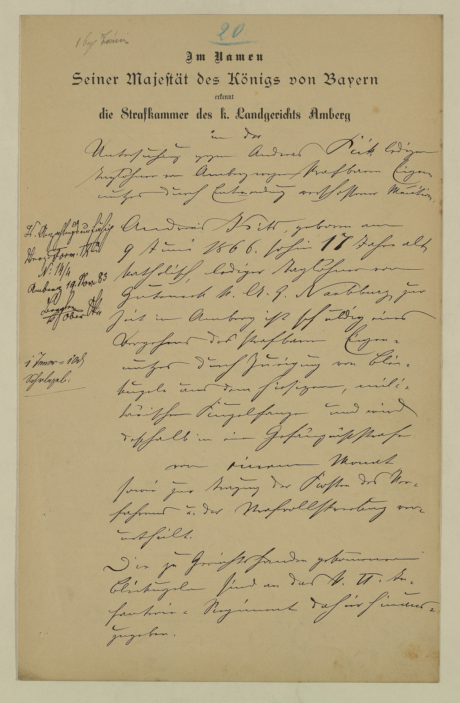

StA Amberg, Landgericht Amberg, Strafakten, 167



Kommentar
Editor: magdalena.weileder@textgrid.de
Archiv: StA Amberg
Bestand: Landgericht Amberg, Strafakten
Signatur: 167
Ort: Amberg
Datum: 1883 November 19
Schlagwort: Akt
Schwierigkeitsgrad: mittel
Kurzbetreff:
Beglaubigter Tenor eines Urteils wegen Munitionsdiebstahls
Beglaubigter Tenor eines Urteils wegen Munitionsdiebstahls
Schreiberhände:
- Bleistiftvermerk (S1)
- Nummerierung mit Blaustift (S2)
- gedruckte Eingangsformel (S3)
- Schreiber des Tenors (S4)
- Obersekretär Bergler (S1)
- Taxvermerk (S1)
Kommentar:
Der 17-jährige Tagelöhner Andreas Kick, bereits wegen Diebstahls und „Obstentwendung“ vorbestraft, hatte Zeugenaussagen zufolge 28 Bleikugeln aus dem Kugelfang des königlichen Infanterieregiments ausgegraben, weshalb er vom Landgericht Amberg zu einer einmonatigen Gefängnisstrafe verurteilt wurde. Die Abbildung zeigt die erste Seite einer beglaubigten Abschrift des Urteilstenors.
Unter der in vier verschiedenen Frakturschriften gedruckten Eingangsformel folgt der Tenor in schwungvoller Kurrent, bei der die stark abgeflachten und teilweise verschliffenen Mittelbandbuchstaben oft nur aus dem Zusammenhang zu unterscheiden sind. Der Schreiber verwendet eine ungewöhnliche und schwer zu erkennende K-Form (z.B. Z. 8: Kick, Z. 19: Kugelfange). Kommata sind oft mit dem vorhergehenden Buchstaben verbunden, das Zeilentrennzeichen ähnelt einer kleinen 2. Für Orts- und Familiennamen wird gelegentlich humanistische Kursive verwendet (Z. 11: Kick mit einer ungewöhnlichen k-Form am Ende, Z. 14: Naabburg).
Die von zwei anderen Händen stammenden Vermerke am linken Rand sind ebenfalls in Kurrent geschrieben, mit einzelnen lateinischen Elementen in humanistischer Kursive.
Der 17-jährige Tagelöhner Andreas Kick, bereits wegen Diebstahls und „Obstentwendung“ vorbestraft, hatte Zeugenaussagen zufolge 28 Bleikugeln aus dem Kugelfang des königlichen Infanterieregiments ausgegraben, weshalb er vom Landgericht Amberg zu einer einmonatigen Gefängnisstrafe verurteilt wurde. Die Abbildung zeigt die erste Seite einer beglaubigten Abschrift des Urteilstenors.
Unter der in vier verschiedenen Frakturschriften gedruckten Eingangsformel folgt der Tenor in schwungvoller Kurrent, bei der die stark abgeflachten und teilweise verschliffenen Mittelbandbuchstaben oft nur aus dem Zusammenhang zu unterscheiden sind. Der Schreiber verwendet eine ungewöhnliche und schwer zu erkennende K-Form (z.B. Z. 8: Kick, Z. 19: Kugelfange). Kommata sind oft mit dem vorhergehenden Buchstaben verbunden, das Zeilentrennzeichen ähnelt einer kleinen 2. Für Orts- und Familiennamen wird gelegentlich humanistische Kursive verwendet (Z. 11: Kick mit einer ungewöhnlichen k-Form am Ende, Z. 14: Naabburg).
Die von zwei anderen Händen stammenden Vermerke am linken Rand sind ebenfalls in Kurrent geschrieben, mit einzelnen lateinischen Elementen in humanistischer Kursive.
Entzifferung
(Absatz Beginn)
1 (Nummerierung mit Blaustift:) 20
2 (Bleistiftvermerk:) 1 begl(aubigter) Tenora)
3 (gedruckte Eingangsformel:) Im Namen
4 Seiner Majestät des Königs von Bayern
5 erkennt
6 die Strafkammer des k(öniglichen) Landgerichts Amberg
7 (Schreiber des Tenors:) in der
8 Untersuchung gegen Andreas Kick ledigen
9 Taglöhner von Amberg wegen strafbaren Eigen-
10 nutzes durch Entwendung verschossener Munition.
11 Andreas Kick(Wechsel des Schriftsystems), geboren am
12 9 Juni 1866. sohin 17 Jahre alt,
13 katholisch, lediger Taglöhner von
14 Guteneck k(öniglichen) A(mts) G(erichts) Naabburg(Wechsel des Schriftsystems), zur
15 Zeit in Amberg ist schuldig eines
16 Vergehens des strafbaren Eigen-
17 nutzes durch Zueigung von Blei-
18 kugeln aus dem hiesigen, mili-
19 tärischen Kugelfange und wird
20 deshalb in eine Gefängnissstrafe
21 von einem Monat
22 sowie zur Tragung der Kosten des Ver-
23 fahrens u(nd) der Strafvollstreckung ver-
24 urtheilt.
25 Die zu Gerichtshänden gekom(m)enen
26 Bleikugeln sind an das k(önigliche) VI. In-
27 fanterie= Regiment dahier hinaus-
28 zugeben.
29 [Vermerke am linken Rand:](:) K(ick) Anzahlungsunfähig
30 Verz(eichnis) Form(ular) IXa(Wechsel des Schriftsystems)
31 N(ummer)(Wechsel des Schriftsystems) 14/4
32 Amberg 19.Nov(ember) 83
33 Bergler
34 k(öniglicher) OberS(e)kr(etär)
35 (:) 1 Tenor = 10 d(enarii)
36 Schr(ei)b(er)geb(ühren)
(Absatz Ende)
a) "Tenor"(Textzitat) gebessert aus "Urt[eil]"(Textzitat), stark verschliffen
Transkription
(Absatz Beginn)
1 (Nummerierung mit Blaustift:) 20
2 (Bleistiftvermerk:) 1 beglaubigter Tenora)
3 (gedruckte Eingangsformel:) Im Namen
4 Seiner Majestät des Königs von Bayern
5 erkennt
6 die Strafkammer des königlichen Landgerichts Amberg
7 (Schreiber des Tenors:) in der
8 Untersuchung gegen Andreas Kick, ledigen
9 Taglöhner von Amberg, wegen strafbaren Eigen-
10 nutzes durch Entwendung verschossener Munition.
11 Andreas Kick(Wechsel des Schriftsystems), geboren am
12 9. Juni 1866, sohin 17 Jahre alt,
13 katholisch, lediger Taglöhner von
14 Guteneck, königlichen Amtsgerichts Naabburg(Wechsel des Schriftsystems), zur
15 Zeit in Amberg, ist schuldig eines
16 Vergehens des strafbaren Eigen-
17 nutzes durch Zueigung von Blei-
18 kugeln aus dem hiesigen mili-
19 tärischen Kugelfange und wird
20 deshalb in eine Gefängnissstrafe
21 von einem Monat
22 sowie zur Tragung der Kosten des Ver-
23 fahrens und der Strafvollstreckung ver-
24 urtheilt.
25 Die zu Gerichtshänden gekommenen
26 Bleikugeln sind an das königliche VI. In-
27 fanterie-Regiment dahier hinaus-
28 zugeben.
29 [Vermerke am linken Rand:] (:) Kick anzahlungsunfähig
30 Verzeichnis Formular IXa(Wechsel des Schriftsystems)
31 Nummer(Wechsel des Schriftsystems) 14/4
32 Amberg, 19. November [18]83
33 Bergler,
34 königlicher Obersekretär
35 (:) 1 Tenor = 10 d.
36 Schreibergebühren
(Absatz Ende)
a) "Tenor"(Textzitat) gebessert aus "Urt[eil]"(Textzitat), stark verschliffen